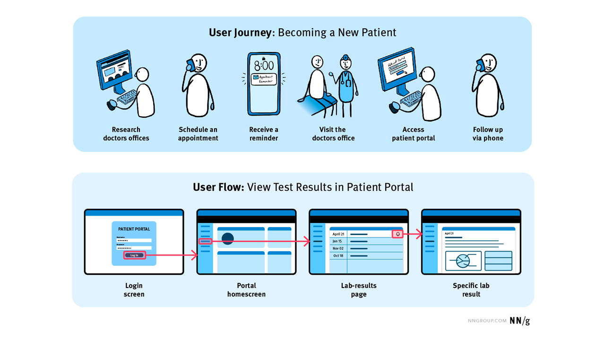

NOAA Fisheries Integrated Modeling System
Welcome to the Fisheries Integrated Modeling System (FIMS) community playbook, your source of information for all members of the FIMS community--developers, users, and receivers of stock assessments. We welcome both those that are new and seasoned to the field to join us as we work to fulfill our mission!
See the overview page for more! →FIMS User Pathways
